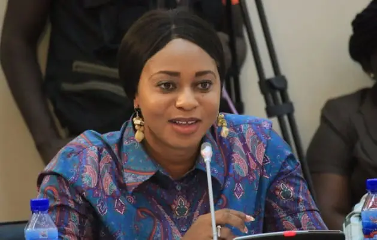
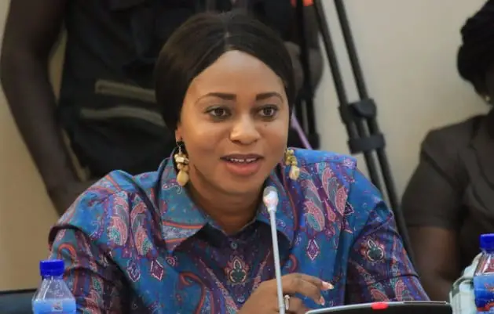
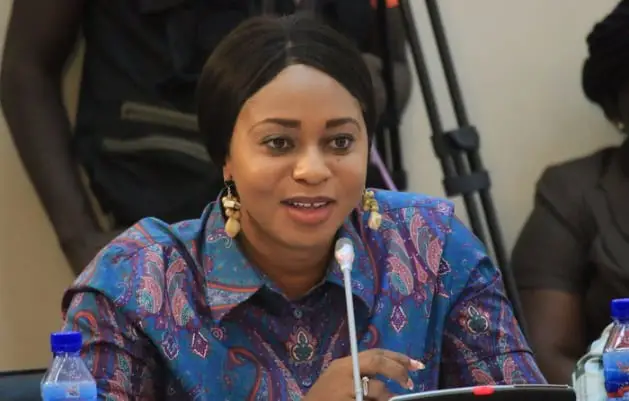

Hon Sarah Adwoa Safo in photos
 

Hon Sarah Adwoa Safo is a Ghanaian politician and a lawyer. She is the New Patriotic Party Member of Parliament for Dome Kwabenya
Constituency of the Greater Accra Region of Ghana. She was the Minister for Gender, Children and Social Protection until 28th July 2022
when she was dismissed by the current President of the Republic of Ghana
Hon Adwoa Safo was born on 28 December 1981. She was home-tutored and wrote and passed her GCE A' Level in 1998
At age 17, she entered the University of Ghana Faculty of Law where she obtained Bachelor of Law (L.L.B.) degree in 2002. She was the
vice-president of the Law Students Union (LSU) in her final year. She then continued to the Ghana School of Law and was called to
the Bar in October 2004 at the age of 22. She holds an LLM from George Washington University. In September 2022, she graduated from
the University of Nottingham with a Postgraduate Diploma in Public Procurement law and Policy.
She was the founding legal officer of the Public Procurement Authority of Ghana. She played a leading role in setting up the
Appeals and Complaints Panel and helped in transforming the Public Procurement Board to become Public Procurement Authority. She worked
with the Legal Aid Board, mediating cases, acting as legal representative on pro bono. She holds a number of certificate in Governance and
Leadership from the Harvard Business School She holds a number of certificates in Governance and Leadership from the Harvard Business School
